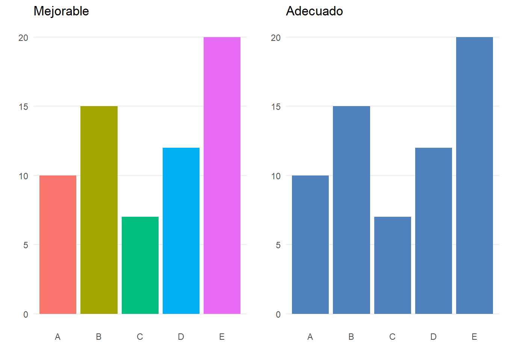
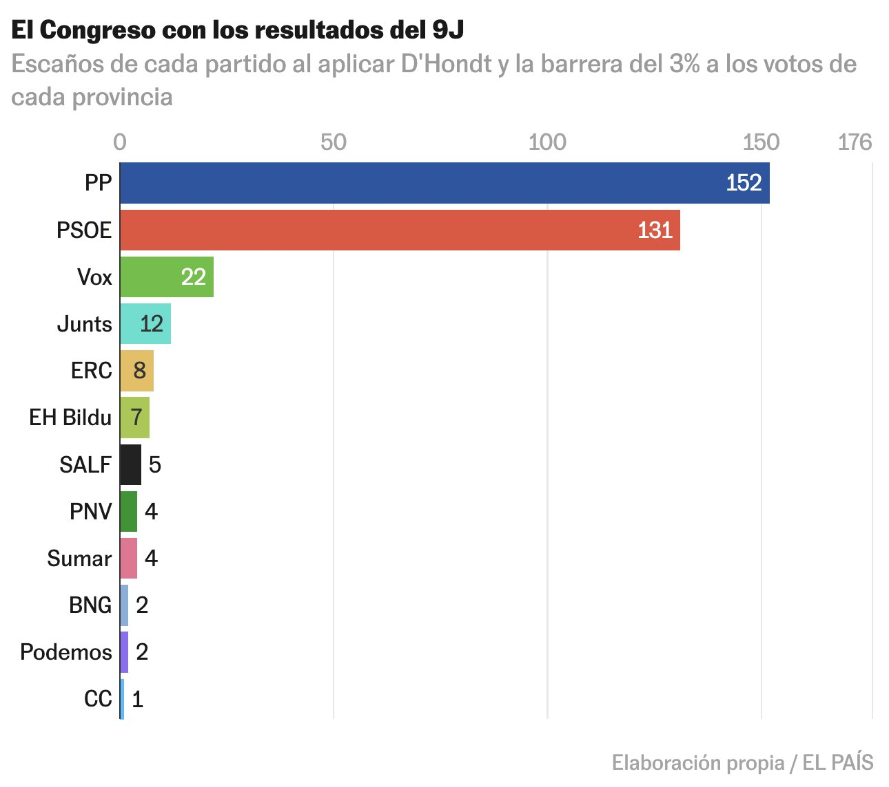
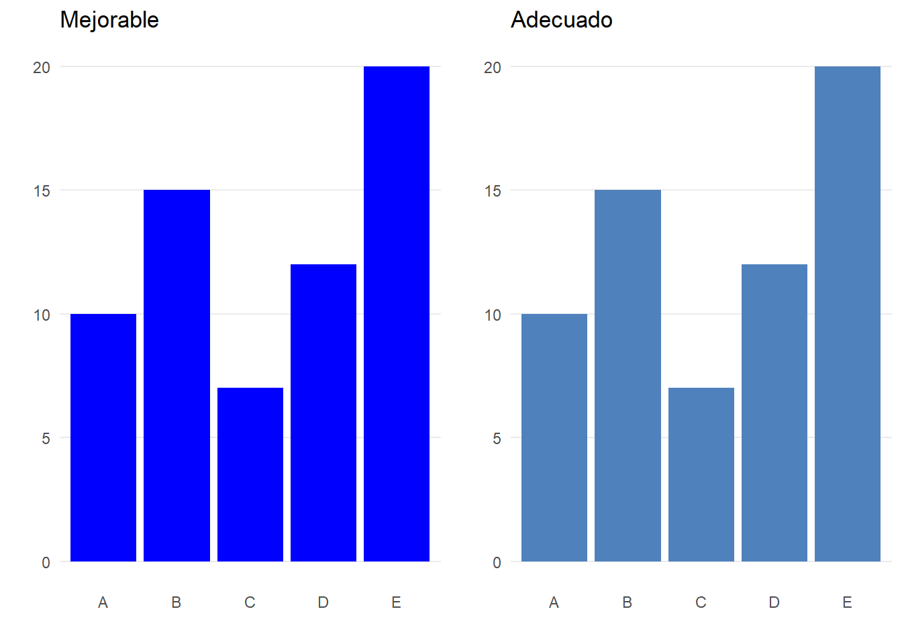
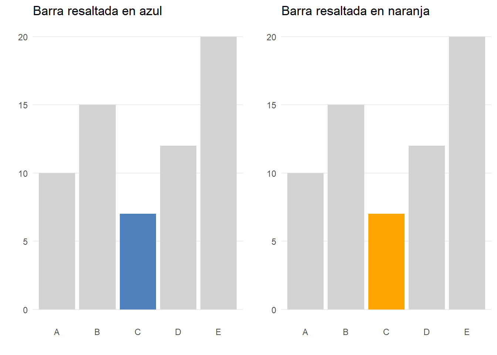
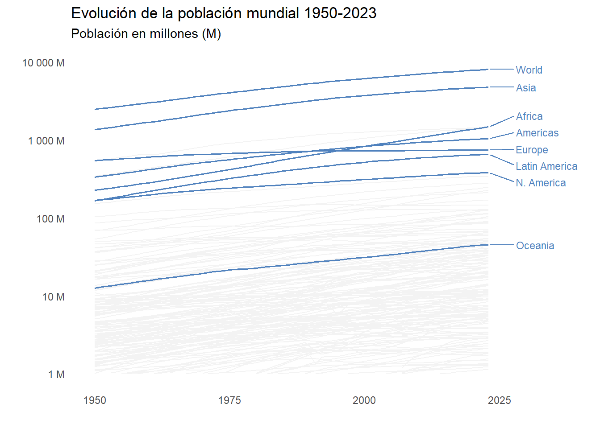

8 Uso básico de los colores
ELEGIR la combinación correcta de colores en una gráfica puede llegar ser la decisión más complicada. La elección del color es un aspecto fundamental que puede influir significativamente en la efectividad y comprensión de los argumentos visuales que se pretenden transmitir. Aunque pueda parecer un detalle menor, esta decisión es compleja porque los colores no solo deben ser estéticamente agradables, sino también funcionales, asegurando que los datos se presenten de manera clara y comprensible para todos los espectadores. En particular, es fundamental considerar la accesibilidad y evitar combinaciones de colores difíciles de distinguir para personas con daltonismo o dificultades visuales.
El uso de demasiados colores puede generar confusión y saturación visual. Si tenemos que escoger un solo color, Cole Nussbaumer Knaflic (Knaflic 2015) nos recomienda emplear el azul sobre fondo blanco. Se imprime bien en blanco y negro, y evita problemas a personas con daltonismo (véase Figura 8.1).
No es ni mucho menos la única alternativa. De hecho, es posible que la elección del color tenga que ajustarse al diseño corporativo o que tenga sentido emplear colores que representen a las entidades involucradas en la visualización. Por ejemplo, el color de las barras de la Figura 8.2 se corresponde con el color corporativo de cada partido político representado. En este caso el uso de un color para cada barra ayuda a entender el gráfico en vez de confundir —como ocurría en la Figura 8.1—.

En cualquier caso, se recomienda no utilizar colores puros (Muth 2020) (véase Figura 8.3). En particular, en gráficas en blanco y negro es mejor seleccionar una variedad de gris oscuro que un negro puro.

El uso de colores debe ser siempre intencional para cumplir su propósito de manera efectiva. No se trata solo de hacer que el diseño se vea atractivo, sino de usar los colores como herramientas para guiar la atención del espectador y resaltar la información más importante. Cada color debe elegirse con un propósito específico en mente: destacar datos críticos, diferenciar categorías o grupos, o crear contrastes que mejoren la legibilidad. La Figura 8.4 emplea para resaltar un dato una paleta de dos colores: un gris como color base y un azul o un naranja como color para enfatizar.

Según Lisa Charlotte Muth (Muth 2018), el color gris se considera el más importante en la visualización de datos. Este color facilita que los colores que se utilizar para enfatizar resalten más —como hemos visto en el ejemplo anterior—. El gris también es útil para datos de contexto general, y para suavizar la impresión visual general de los gráficos (véase la gráfica Figura 8.5.
